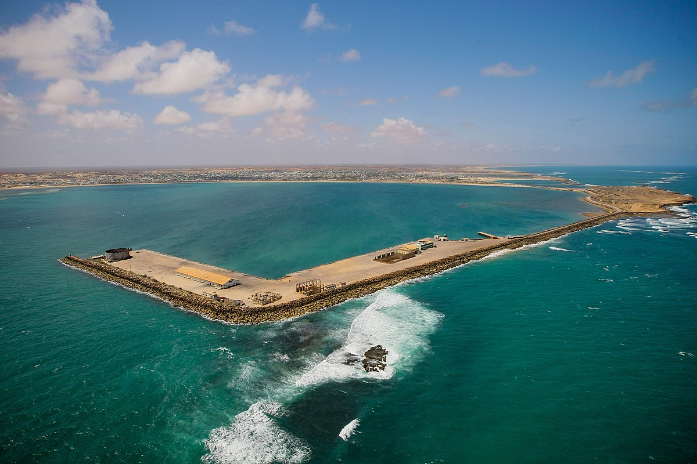
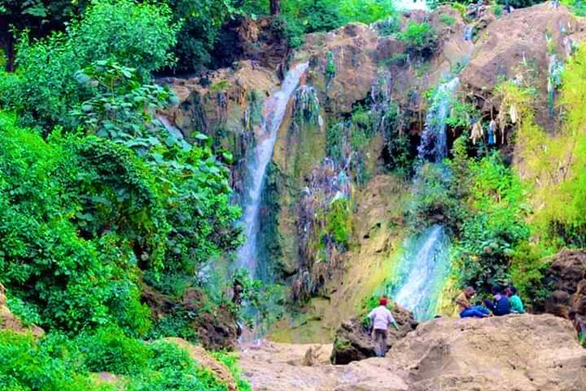

Mogadishu
Visit the Somali Youth League
Memorial, the Dhagaxtuur Obelisk, and
the Monument to the Unknown
Soldier.
the Monument to the Unknown
Soldier.

Kismayo
The city is situated where the Jubba
river empties into the Indian Ocean
and no trip to Kismayo should miss a
river empties into the Indian Ocean
and no trip to Kismayo should miss a
visit to Goobweyn Junction.

Baidoa
Baidoa or Iscia Baidoa, is a Somali city
and the capital of the Southwestern State
of Somalia, situated in the south
and the capital of the Southwestern State
of Somalia, situated in the south
-central bay region of the country.